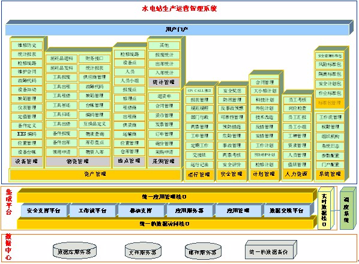

系统采用树状与列表型双结构管理电站内设备，通过树状结构可以方便的查找到目的设备以及父子关系的设备，从而完成对现场设备的监控和跟踪，并进行维护和更新设备和运行位置的基本信息。另外设备可以与我公司KKS水电编码系统联合使用完成对设备编码和定位的目的。
物资管理指对物品或工具的接收、保管、保养、发放、回收等环节的过程控制，本模块主要包括库存管理、物资入库、物质出库、领料与退料、库存盘点、物资采购等。 - 3、工具管理
工器具的管理包括日常借用、归还和日常维护，此外还有专用工具的年检和安全试验、工器具的报修、报废和添置等。
运行部是电厂的核心部门，担负着上级部门下发到全厂发电任务的重任，因此发电运行的管理功能也是本系统的重点。 运行管理模块基本囊括了运行过程中日常的各种记录与操作过程，同时提供方便灵活的两票流程处理功能，为电站和员工提供了安全工作的保障。主要内容有各种运行记录、ON_CALL记录、实时参数记录、规程管理、两票管理和相应报表输出等。
完善的安全监督工作可以达到减少事故、促进工作的目的，本系统安全监督功能包含了水电站常见的各项工作，如：安全性评价、人员安全管理、设施安全管理、异常故障管理、安措管理、事故管理、安全检查管理、上级指令管理、安全文明生产管理、两票考核管理、安全奖惩管理等。
通过合理的预防性维修可以达到防止意外事故、预防计划外停机的目的。通过本功能可以建立预防性维修计划来定义在设备或位置上周期性执行的预防性维修工作。系统支持按照时间、里程表、日历、季节和时间触发的预防性维修。此外，还可以产生需要对多个位置和设备同时进行的检查性预防性维修，也可以通过建立预防性维修计划来定义电厂的大小修项目。
管理设备或工具的故障信息代码，对每个设备或者工具建立树状管理结构，故障代码信息包含故障代码编号、故障问题及现象、故障原因分析、故障处理措施等信息。通过对设备故障代码的出现趋势分析可以指导维护人员及时采取合适的预防性维护措施。同时历史代码也为今后故障诊断与处理提供有价值的参考作用。
计划管理按照目前常用的一套现行计划管理体系编制，实现计划以及合同的电子化管理，该体系包括计划的申报、汇总、审核、批准、执行、完成情况评价等。
实现对员工简历、培训、特殊工种及员工考核的管理。
在维修的过程中，可以把一些实际的经验和习惯的做法归纳总结起来，作成在执行某些特定工作任务的标准工作包供日后参考。
统一管理系统中各种综合信息的统计查询与报表生成，通过管理员设置可以生成各种专业型查询统计报表，对系统状态一目了然。
系统管理模块实现对水电站生产运行管理系统的设计、配置等功能。通过系统配置，我们能为水电站生产运行管理系统设计业务流程、规划系统授权、对现有的应用程序客户化修改以达到适应各项目的不同需求、对系统内的标准参数和运行参数进行配置、对系统辅助应用程序进行设置等。
